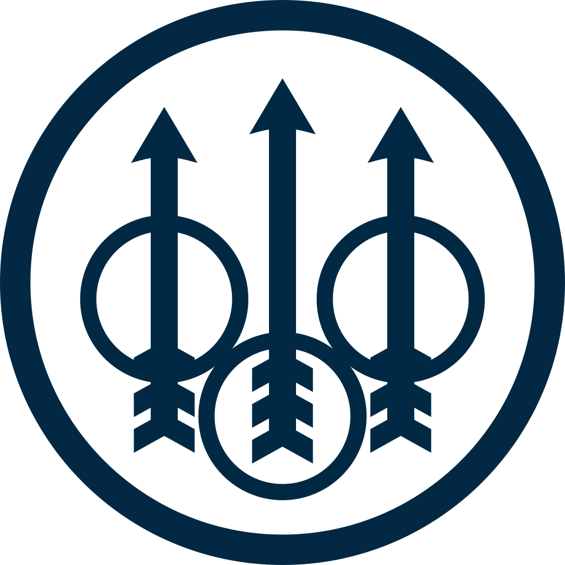

베레타 Beretta
베레타(Beretta)는 이탈리아 브레시아에 본사를 둔 총기 제조 기업으로, 1526년 이전에 설립되어 세계에서 가장 오래된 현존 총기 제조사로 꼽힌다.
최종 업데이트

베레타는 어떤 브랜드인가
베레타는 민간, 법 집행기관, 군용으로 사용되는 총기를 세계 각지에 공급하는 이탈리아 총기 제조업체이다. 매출의 4분의 3은 스포츠용 총기에서 나오며, 사격용 의류와 액세서리도 함께 판매한다.
여러 국가에서 사업을 운영하는 비상장 가족 소유 기업으로, 1650년 이후 유럽의 주요 전쟁마다 무기를 공급해 왔다. 1980년대에는 베레타 92 권총이 미군 제식 권총 M9로 채택되면서 북미 시장에서 다시 인기를 얻었다.
1980년대 말에는 Benelli, Franchi 등 이탈리아 내 경쟁사와 핀란드의 기업들을 인수하며 사업을 확장했고, 이를 통해 이탈리아를 대표하는 총기 제조업체로 자리잡았다.
베레타는 어떻게 시작되고 성장했나
베레타의 기원은 이탈리아 브레시아주 발트롬피아 계곡의 가르도네 마을에 있는 대장간으로, 1500년경부터 가동된 것으로 알려졌다. 최초로 문서화된 거래는 1526년 10월 3일 자 계약으로, 베네치아 공화국이 총열 제작 장인 Bartolomeo Beretta에게 총열 185정을 주문한 내용이다.
이 총기 제작 기술은 Bartolomeo의 아들 Jacopo, 손자 Giovannino, 증손자 Giovan Antonio에게 대를 이어 전수되었으며, 길드 제도가 폐지된 1797년 나폴레옹의 베네치아 공화국 정복 이후까지 이어졌다. 같은 가문이 약 500년 동안 베레타를 소유해 왔다.
베레타의 브랜드 아이덴티티는 무엇인가
약 500년간 같은 가문이 소유해 온, 세계에서 가장 오래된 현존 총기 제조사라는 점이 다른 총기 브랜드와 구분되는 지점이다.
베레타의 대표 제품과 서비스는 무엇인가
베레타는 매출의 4분의 3을 차지하는 스포츠용 총기를 비롯해 사격용 의류와 액세서리를 판매한다. 1918년에는 세계 최초의 기관단총 중 하나인 베레타 모델 1918을 이탈리아 군에 공급했다.
제2차 세계대전 이후에는 미국이 이탈리아에 지급한 M1 개런드 소총을 개조해 베레타 BM-59 소총을 만들었다. 1970년대에는 브라질 상파울루에 생산 공장을 세우고 브라질 정부와 계약을 맺어 1980년까지 베레타 92를 생산했다.
1980년대에는 베레타 92 권총이 미군의 제식 권총 M9로 채택되었다.
베레타는 지금 어떤 상태인가
베레타는 여러 국가에서 사업을 운영하는 비상장 개인 소유 기업으로, 모기업은 베레타 홀딩이다. 같은 가문이 거의 500년 동안 소유해 온 가족 기업이며, 세계에서 가장 오래도록 지속적으로 운영되고 있는 기업 중 하나로 꼽힌다.
또한 2백 년 이상 가족이 경영해 온 기업들의 모임인 Les Henokiens의 창립 회원이다.
베레타 로고는 어떻게 변해왔나
자주 묻는 질문
베레타는 어느 나라 브랜드인가요?
베레타는 이탈리아의 에너지·산업재 브랜드입니다.
베레타의 브랜드 아이덴티티는 무엇인가요?
약 500년간 같은 가문이 소유해 온, 세계에서 가장 오래된 현존 총기 제조사라는 점이 다른 총기 브랜드와 구분되는 지점이다.
베레타의 대표 제품은 무엇인가요?
베레타는 매출의 4분의 3을 차지하는 스포츠용 총기를 비롯해 사격용 의류와 액세서리를 판매한다.
베레타는 어느 기업이 소유하고 있나요?
베레타는 여러 국가에서 사업을 운영하는 비상장 개인 소유 기업으로, 모기업은 베레타 홀딩이다.
베레타의 창업자는 누구인가요?
베레타의 창업자는 Beretta입니다(위키데이터 기준).
베레타의 본사는 어디에 있나요?
베레타의 본사는 브레시아에 있습니다(위키데이터 기준).
베레타의 공식 웹사이트는 어디인가요?
베레타의 공식 웹사이트는 https://www.beretta.com/en/ 입니다.
출처와 검증
베레타 관련 참고: 공식 웹사이트 · 위키데이터 Q324782 · 한국어 위키백과 · 영어 위키백과. 브랜드명은 한글과 원어를 함께 표기하되 데이터에 없는 표기는 만들지 않습니다. 기원 국가·설립연도는 검수된 정의문에서 확인된 값을 우선하고, 없을 때만 공식 웹사이트 URL이 일치하는 위키데이터 개체의 값을 씁니다. 웹 첫 보관은 인터넷 아카이브가 공식 사이트 첫 화면을 처음 보관한 날로, 사이트 개설일과 다를 수 있습니다. 위키데이터 값은 2026-09-27 기준입니다.